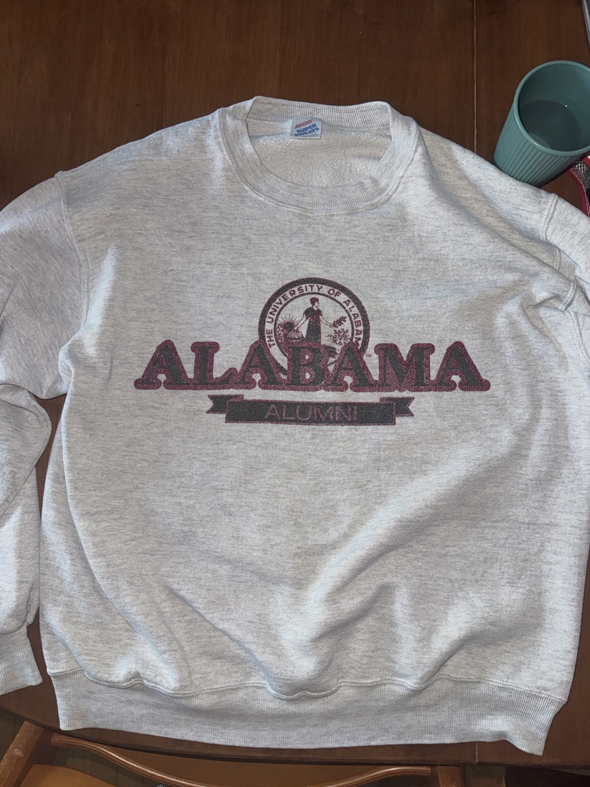
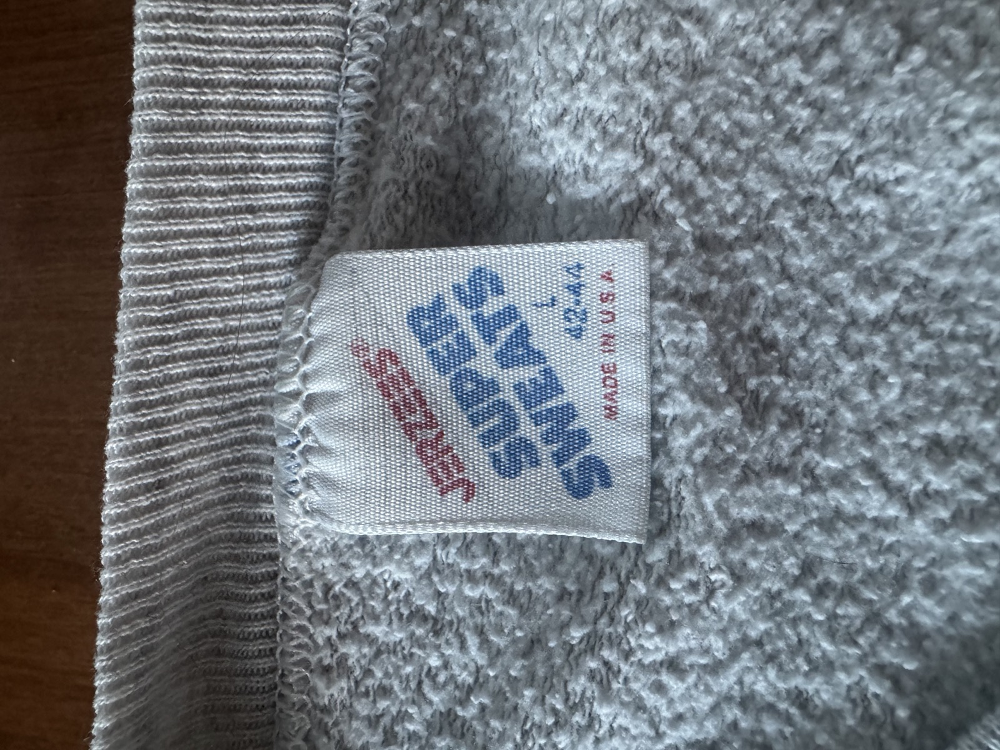
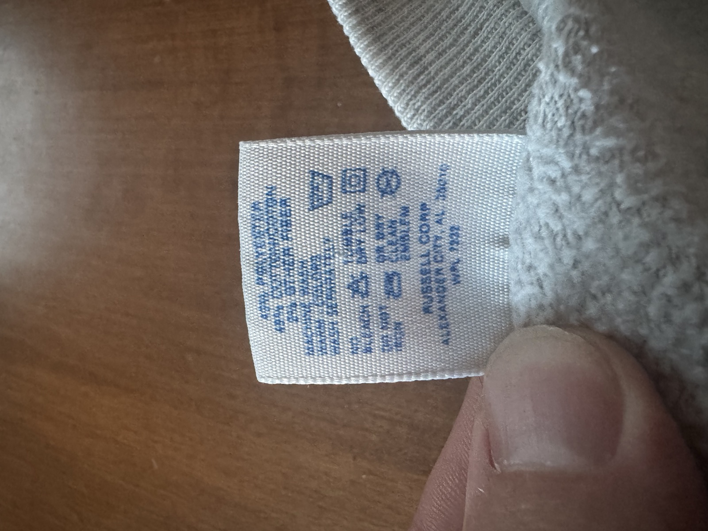

One ash-gray University of Alabama Alumni crewneck — big straight-set outline ALABAMA, the university seal rising behind it, a charcoal ALUMNI ribbon below — on a made-in-USA Jerzees Super Sweats blank. It exists. One of them is being hunted.
As of Oct 26, 2026, the exact print (outline ALABAMA + seal + ALUMNI banner, gray) is not live on eBay, Etsy, Poshmark, Mercari, Depop, Grailed, AlabamaVTG’s catalog, or the open web index. Facebook was not swept: the Chrome extension was offline again, so the Birmingham Champion L is still unverified. About 190 unseen listings were title-screened and logged; 26 were looked at in image grids and five were opened. Three earned cards, all gray and all L or XL: an eBay ash XL that pairs the elephant-A with the full university seal ($39.99 or best offer), a Galt Sand ash Large with the big laurel crest on Poshmark ($42, from the same seller as the eBay Galt Sand seal L), and a 20/20 Sport heather XL with the elephant-A on Mercari ($42.49, with a couple of pulls photographed). None has the ALUMNI banner. Every live card from Oct 22 was re-checked and is still in stock, including the Homefield seal crew in L and XL.
The Depop copy of the Lee Sport ALABAMA + seal + ribbon L sold; the card now points at the second copy on eBay, still in stock at $34.99. The Russell elephant-A L on Grailed dropped from $45 to $40, and the Etsy laurel XL is back to $72. Every other live card was re-verified on Oct 22: eight eBay listings, four Poshmark, two Mercari, two Grailed, two Etsy, the Jerzees grey L at AlabamaVTG ($50), and Homefield’s ash seal crew in stock S–4XL at $68.
Photographed in hand. The neck tag is Jerzees Super Sweats, 42-44 (a 90s Large), Made in U.S.A.; the care tag is Russell Corp, Alexander City, AL — WPL 7332, ~50/50 poly-cotton with 5% other fiber. That tag combo dates it to roughly 1988–1995.



Nothing here is the exact print — these are the nearest live cousins, ranked, and every one of them clears both gates first: gray, and an L or an XL. The top slots are not cousins at all: they are the second target, the elephant-through-the-A device. The Hanes Large is still first; the Grailed XL behind it is now $40. Added Oct 19: a heather gray Lee Sport Large with an ALABAMA + seal + ribbon-banner layout (the Depop copy sold by Oct 22; the eBay copy at $34.99 is live), and a gray TSI XL with a small seal on Etsy at $70, which runs big. Nothing new was added Oct 22. Below the elephant cards are the seal cousins in order, then the small chest-logo versions of the device. Every card was re-verified live on Oct 22 except the Facebook one, which could not be checked (Chrome offline). What none of them have is the word this shirt is named for.
If the point is wearing the thing rather than owning the artifact. The gray-only rule cut this section to one: the licensed alumni prints from JNJ and the campus store are cardinal and crimson, and the alumni graphic only comes in gray on t-shirts, not crewnecks. So there is exactly one new sweatshirt worth naming, and as of Oct 26 it is still in stock in L and XL.
Eleven dead listings, kept because each one proves something specific — not as candidates. Two are crimson, which disqualifies them outright; between them they show the exact seal + ALUMNI formula was printed by more than one maker. Two are the same Jerzees Super Sweats 42-44 from the same Semmes seller, listed eleven days apart, and both gone — the running proof that the correct blank keeps coming back and keeps getting bought by someone faster. The Poshmark Russell is the one that meets the spec on every axis but availability: ash, size L, embroidered EST. 1831 ALUMNI — sold for $28, which is the price truth this whole hunt is calibrated against. Anything merely old, merely gray or merely Jerzees has been dropped from this section and logged in the registry instead.
The grail will surface eventually — 90s Alabama gear churns onto these marketplaces weekly. These are the exact searches, newest-first where supported. A recurring agent runs this protocol; you can also click through any time.
| Where | Search | Notes |
|---|---|---|
| eBay | alabama alumni sweatshirt · jerzees alabama · galt sand alabama | Best channel. Log in & "Save this search" for instant email alerts. |
| Etsy | vintage alabama alumni sweatshirt | Vintage dealers title carefully — "alumni" would appear. |
| Poshmark | alabama alumni sweatshirt | Where the closest cousin sold. Low prices. |
| Mercari | alabama alumni sweatshirt | Renders only in a real browser session. |
| Grailed / Depop | grailed · depop | Long-tail; occasionally underpriced. |
| Facebook Marketplace | vintage alabama alumni sweatshirt | Live since Aug 30 — sweep shipping and local Alabama pickup separately; default (suggested) sort, not newest. |
| AlabamaVTG | full sweatshirt collection | Specialist dealer; whole catalog sweepable via products.json. |